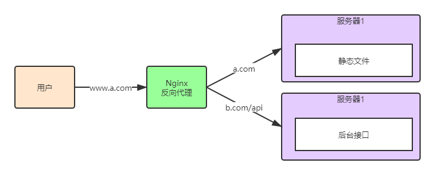

这篇关于跨域的简单描述与实现跨域的几种方式💤。
前言
什么是跨域？
举个例子，你的前端页面运行在www.abc.com下， 现在需要从www.bcd.com/api请求一个数据，这里因为域名不同，浏览器会限制你的请求，这就是跨域。浏览器从一个电脑端口访问另一个端口或另一个服务器是会有限制，请求的协议，端口，域名的任意一个不同都会有限制，解决这个限制就是跨域，尤其是前后端分离的页面很常见。
有什么限制？
- 不能获取Cookie，LocalStorage(网页缓存)等
- 不能发送 AJAX 请求
会介绍以下几种跨域方式
- JSONP
- CORS跨域资源共享
- 基于 http proxy
- 基于 post message
- web scoket 和 nginx 反向代理
- iframe的跨域方式
- …..
JSONP跨域
JSONP不是什么新技术,别看这个名字多高尚。它是利用script,img等标签实现请求数据的。
发送格式如：
1 | <body> |
后端处理收到的是一个函数(这里用express写了一个简单接口)，给前端打包好了运行的函数
1 | var express = require('express'); |
所以在前端定义好这个函数即可。
存在问题：
JSONP 只能处理 GET 请求，安全性不太好。
CORS资源共享
前端正常发送 ajax ，fatch 等请求。
服务器端设置相关的请求头。
1 | <body> |
这样并不能实现跨域，我们在后端需要配置。
这是 Node.js 框架的中间件，这里这是请求头。
1 | cros ={ |
这里有介绍以下 OPTIONS 请求，它是发送普通请在求之前发送的一个请求。
发送一个 get 请求的时候，浏览器先发送 OPTIONS 请求。
OPTIONS 请求方法的主要用途有两个：
1、获取服务器支持的HTTP请求方法；
2、用来检查服务器的性能。
存在问题：
Access-Control-Allow-Origin 只能设置一个具体的值和 *。
设置为具体的值，只能一个源可以访问。
设置为 * 表述所有端口都可以访问，但是不允许携带 cookie。
http proxy
前端发送 ajax, fatch 请求（这里不再重写，跟 CORS 中的请求一样）。
还需要配置 proxy代理。proxy代理在 webpack（webpack-dev-server）, vue , react 等项目中配置。
在 vue 中设置
Nginx 反向代理

我们启动两个服务，比如我们项目静态页面在 5500 端口上运行的，后端运行在 8088 端口上，当我们访问想获取后端数据是存在跨域问题。
我们安装 nginx 后把 nginx 启动在默认的80端口上，nginx 的作用是 当用户访问路径 以 / 开头时，代理到5500 端口上，当用户访问 /api/开头是代理到 8088 端口上。
这样可以解决跨域问题。
下面详细介绍配置:
打开下载的目录找到 nginx/fon/nginx.conf 文件
1 | // 需要注释: 这是静态服务 |
自己添加配置 nginx/fon/nginx.conf。
1 | # / 开头的请求代理到http://localhost:5500; |
我们只需要启动三个服务，这里第一个服务用nginx启动，给用户访问80端口，也就是用浏览器访问80端口。
第二个服务是前端页面的服务。这里5500端口。
第三个服务是后台接口的服务。这里是8088端口。
在根目录打开 cmd 输入 nginx -t 测试，输出以下内容说明安装成功。
1 | D:\Software2\nginx>nginx -t |
启动：
1 | nginx |
这里 nginx 启动了80端口的服务。
我们启动5500、3000端口的服务后，浏览器访问80端口，可以获取也页面内容。
postMessage
https://developer.mozilla.org/zh-CN/docs/Web/HTTP/Access_control_CORS)